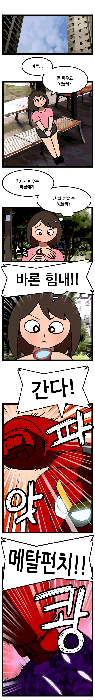
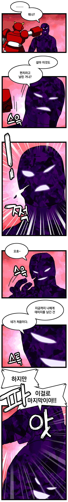
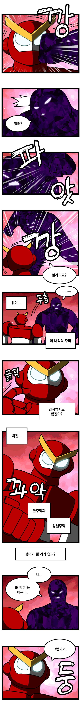
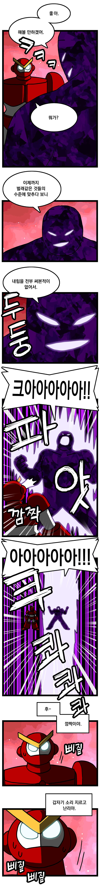
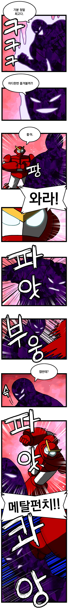
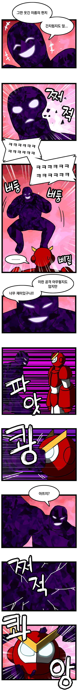
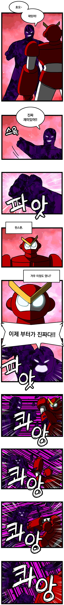
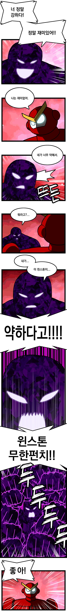
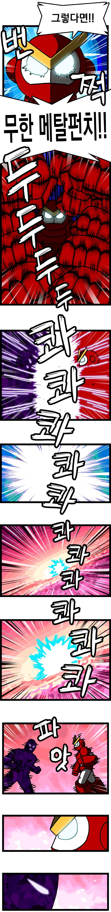
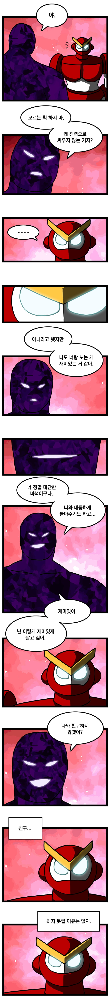
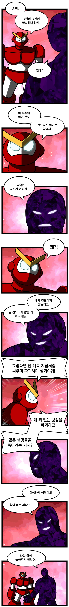
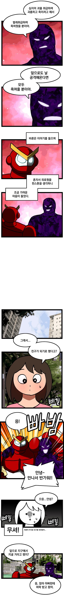
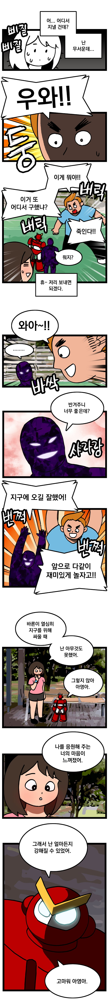
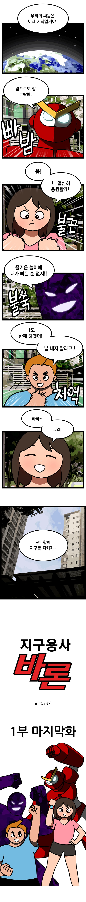
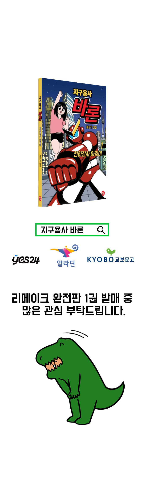
여기까지 고마워!















여기까지 고마워!
댓글
수집 당시 댓글 20개
폰드123 · 11.15 08:30:47
가면군 · 11.15 09:13:31
봇치쟝 · 11.17 09:00:58
ㅇㅇ · 11.17 09:11:03
ㅇㅇ · 11.17 09:12:47
라임왕자 · 11.17 09:22:34
· ㅇㅇ · 11.17 09:28:48
· 라임왕자 · 11.17 09:29:07
04T · 11.17 09:43:53
ㅇㅇ · 11.17 09:48:52
ㅇㅇ · 11.17 10:21:56
ㅇㅇ · 11.17 10:48:55
dd · 11.17 11:17:18
ㅇㅇ · 11.17 11:35:46
dd · 11.17 12:19:11
ㅇㅇ · 11.17 13:01:23
ㅇㅇ · 11.17 13:14:51
ㅇㅇ · 11.17 13:44:09
ㅇㅇ · 11.17 14:41:43
그냥그래요 · 11.17 15:38:16